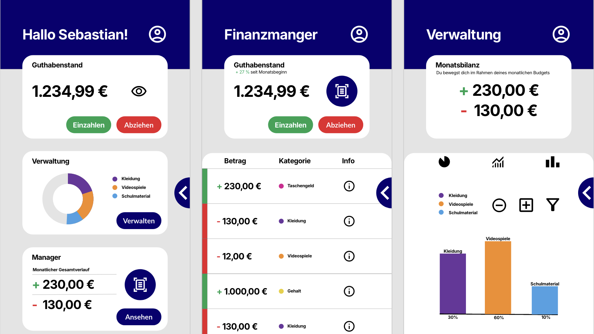

Projekte
RedBull Werbespot
Eine im Rahmen der Schule gedrehte Produktwerbung zum Thema RedBull Cola.

Diplomarbeit PayWatch
Eine Quasar-basierte App, welche es ermöglicht, Rechnungen mittels KI einzulesen. Mehr Infos!


Fotografieprojekt "Getränke"
Im Rahmen eines Jahresprojekts wurden von mir Objekte zum Thema Getränke fotografiert.